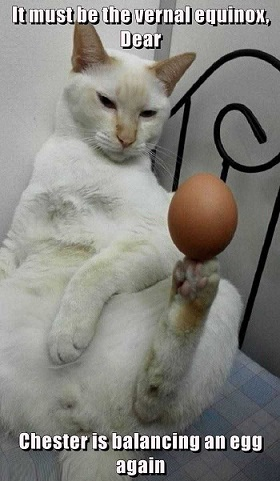

In the middle of the journey of our life, I came to myself in a dark wood, for the straight way was lost.
Ah, how hard a thing it is to say what that wood was, so savage and harsh and strong that the thought of it renews my fear!
It is so bitter that death is little more so! But to treat of the good that I found here, I will tell of the other Things I saw.
I cannot really say how I entered there, so full of sleep was I at the point when I abandoned the true way.
But when I had reached the foot of a hill, where the valley ended that had pierced my heart with fear, ...
I looked on high and saw its shoulders clothed already with the rays of the planet that leads us straight on every path.
Then was the fear a little quieted that in the lake of my heart had lasted through the night I passed with so much anguish.
And like one with laboring breath, comes forth out of the deep onto the shore, who turns back to the perilous water and stares:
so my spirit, still fleeing, turned back to gaze again at the pass that has never yet left anyone alive.
After I had a little rested my weary body, I took my way again along that deserted slope, so that my halted foot was always the lower.
And behold, almost at the beginning of the steep, a leopard, light and very swift, covered with spotted fur;
and it did not depart from before my face but rather so impeded my way that I was at several turns turned to go back
The time was the beginning of the morning, and the sun was mounting up with those stars that were with it when God's love...
first set those lovely things in motion; so that I took reason to have good hope of that beast with its gaily painted hide...
from the hour of the morning and the sweet season; but not so that I did not fear the sight of a lion appeared to me.
